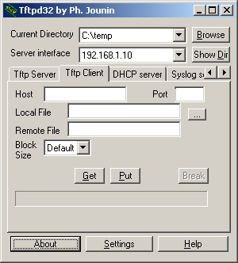

Download
To download a file (get it from the server) you need to know :
- The name of the server or its IP address
- The name of the file on the server
You have to fill the fields Host and Remote File then click on the Get button, the transfer will start.
If you want to change the name of the file, you may complete the field Local File.
Upload
To upload a file (put it on the server), you need to know
- The name of the server or its IP address
- The name of the file on your PC
You must fill the fields Host and Local File then click on the Put button.
